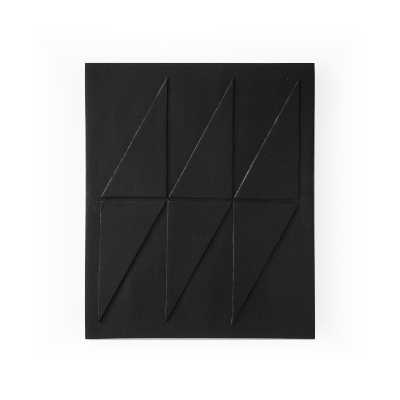
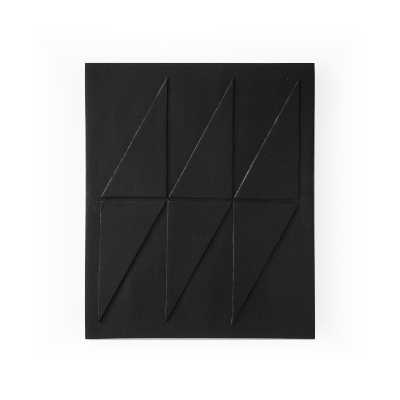

Minha pesquisa se dá no interesse pela 'feitiçaria' enquanto ciência capaz de investigar e imbuir o plano dos devires à superfície dos objetos. É uma operação que busca a captura do espírito, da terra e das estórias, partindo da escuta do invisível e da relação entre corpo-espírito. Este fazer manual é um antifeitiço contra a letargia do consumo, um gesto de reencantamento que busca colar o nosso corpo de volta à terra. Em diálogo com as urgências do Antropoceno, o trabalho se manifesta como um Ebó — uma oferenda e ferramenta que reverte a lógica da mercadoria para elaborar desejos, revisitar memórias e propor uma recuperação ecológica fundamental para a reconfiguração dos sentidos e a reorganização do mundo.
Bruno Ceccato é artista visual, graduado em Arquitetura e Urbanismo pela UNESP. Em 2015, aprofundou-se no estudo da cerâmica e começou a desenvolver suas primeiras obras autorais. Em 2018, foi contemplado pelo ProAC com o projeto Tudo Fica Olhando, Escutando, que expandiu sua pesquisa em diálogo com o MAHKU (Movimento dos Artistas Huni Kuin), no Acre. O projeto resultou em uma exposição individual homônima, acompanhada por oficinas de desenho e percepção coletiva com alunos da rede pública. A partir de 2020, passou a explorar materiais mais sustentáveis para suas criações, o que levou ao desenvolvimento da série Antropofágicas, composta por peças feitas com fibra de papelão reciclado e biopolímero vegetal. Desde então, tem se dedicado à pesquisa e aprimoramento desse material, ampliando suas investigações artísticas. Seu trabalho mais recente é a série Fôlego (2025).
Obras
 
